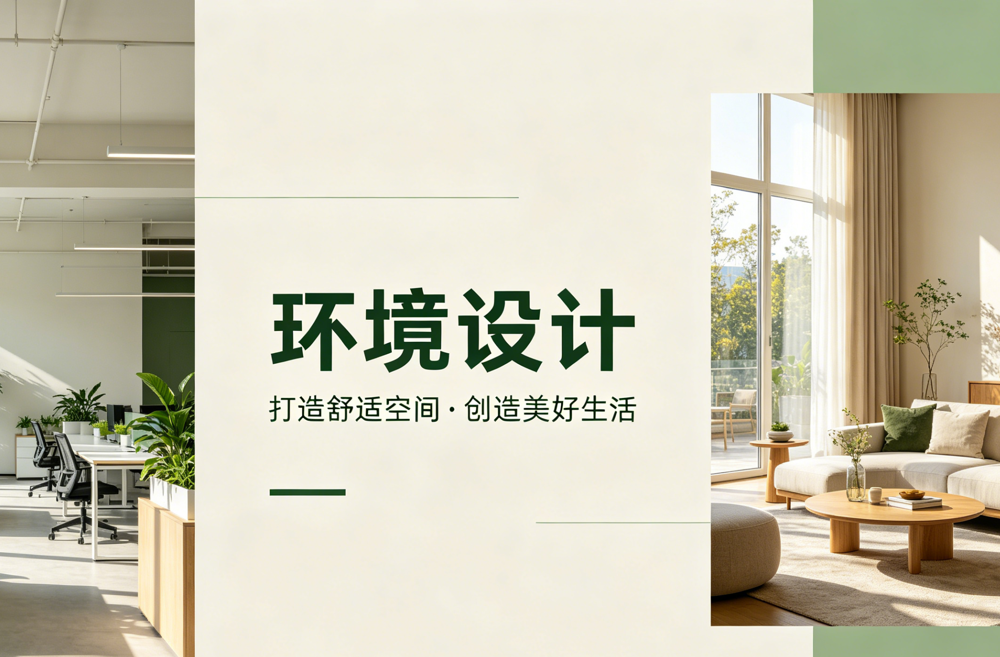
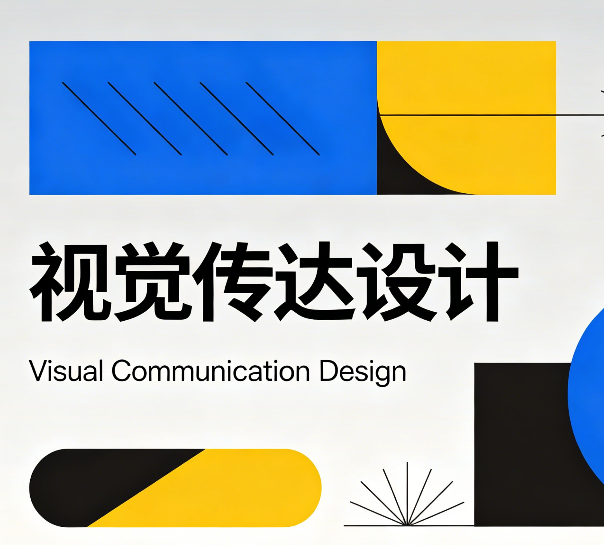
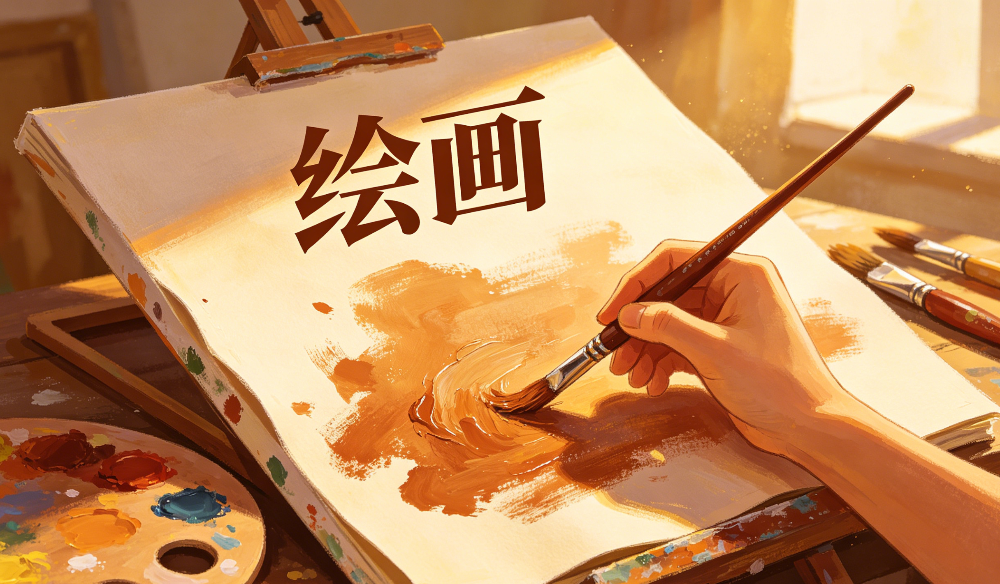

环境设计
培养具备空间规划与环境艺术设计能力的专业人才
视觉传达设计
培养品牌视觉设计与平面传播领域的专业人才
产品设计
培养产品创新设计与用户体验研究的专业人才
绘画
培养具有扎实绘画功底与艺术创新能力的专业人才

环境设计专业介绍
01 培养目标
本专业致力于培养德、智、体、美、劳全面发展，具备扎实的环境设计专业理论基础、卓越的创新思维能力和工程实践能力，并拥有开阔国际视野的高素质应用型研究型人才。学生将能够适应智慧社会与商业市场的快速发展需求，系统掌握室内外人居环境设计、项目管理和设计研究方法，具备解决复杂环境问题的能力。毕业生不仅能在建筑设计院所、景观设计公司、房地产开发企业等机构从事设计规划与工程管理工作，还能在文化遗产保护、城市更新、乡村振兴等领域进行深入研究与创新创业，成为引领未来人居环境高质量发展的中坚力量。本专业旨在培养拥有强烈责任意识、科学理性精神、领先审美判断，能够从事设计研发、推动专业发展、承担设计教育的复合型应用人才。
02 专业概况
环境设计专业(专业代码：130503)是一门普通高等学校本科专业，属设计学类，基本修业年限为四年，授予艺术学学士学位。本专业自1993年开始招生，历经三十余年的深耕发展，已成为国家级一流本科专业建设点，专业实力与办学水平位居全国前列。专业发展历程硕果累累：
- 学术平台进阶：2006年被授予"设计学"和"工业设计工程"硕士点；2019年获批"山东省一流本科专业建设点"；2021年正式获批"国家级一流本科专业建设点"，并拥有设计学一级硕士学位授权点和设计专业硕士学位授权点。
- 学科实力认可：2009年获批山东省"环境艺术与建筑设计"重点学科；2016年获批山东省高水平应用型"建筑与环境设计"专业群。
- 课程建设成果：获批三门山东省一流本科课程建设点。
- 权威排名表现：在2023年软科中国大学专业排名中，本专业获评A类专业，彰显了卓越的行业影响力与社会声誉。
03 专业特色
本专业依托学校建筑学、土木工程等强势学科，形成了"艺工结合"这一最鲜明的办学特色。以国家创新驱动发展战略、海洋发展战略为指引，聚焦山东新旧动能转换与"新城建"需求，致力于培养"厚基础、重应用、跨学科、能创新"的高素质应用型研究型人才。
- 鲜明的"艺工结合"特色：将深厚的艺术人文素养与严谨的建筑工程技术深度融合，使学生不仅具备卓越的审美判断和设计创意，更掌握扎实的工程技术、材料工艺和项目管理知识。
- 产学研协同育人模式：打造"专业实验室+实践基地+校企合作联盟"的立体化育人平台，推行"项目制工作坊"教学模式，实现"真题真做"的实战化培养。
- 前沿的学科交叉方向：纵向深耕适老化生态设计、建筑遗产保护再利用、文化景观虚拟再生、景观保护与更新等前沿领域；横向打通生成式人工智能(AIGC)技术，开设数字孪生设计、智能交互与环境沉浸式技术等前沿课程，培养具备科技素养的系统设计人才。
- 产教融合共同体建设：与行业龙头企业(如海信、融创、德才等)共建"适老化设计研究院"、"数字城市研究中心"等产教协同平台，将企业真实项目与市场需求引入教学全过程，形成"需求引领、学科交叉、产教协同、系统创新"的特色发展模式。
04 专业方向
经过近三十年的建设和发展，本专业已形成室内设计和景观设计两个培养方向，均以科技创新为内核、城市更新为场景、交叉学科为根基、产学研融合为纽带。
- 室内设计方向：深入研究人居室内空间设计、公共空间设计、商业展陈空间设计、智能家居与适老化环境设计，关注空间功能、艺术氛围和用户体验的有机统一。
- 景观设计方向：主攻城市公园设计、滨海生态景观设计、广场景观、居住区景观、乡村人居景观设计、历史街区保护与更新，强调生态可持续与文化传承。
主要聚焦的研究领域包括：
- 适老化生态设计：应对老龄化社会挑战，研究安全、健康、舒适的老年友好型人居环境。
- 建筑遗产保护再利用：运用数字化技术和高精度测绘手段，对历史建筑、工业遗产进行保护、修复与活化利用。
- 文化景观虚拟再生：利用虚拟现实(VR)、增强现实(AR)等技术，对已消失或不可移动的文化景观进行数字化复原与沉浸式展示。
- 景观保护与更新：探索城市及乡村生态环境的可持续保护与景观空间品质提升策略。
- "数字空间设计"赋能精准保护：借助三维激光扫描、倾斜摄影、建筑信息模型等技术，建立历史建筑的"数字孪生"模型，实现"一栋一码"的全生命周期管理。这不仅为修缮提供高精度的数据底座，还能通过物联网传感器实时监测建筑的结构位移、温湿度变化，进行预防性保护。
- "智慧空间"与"低碳"运营：在遗产建筑的活化利用中，融入智慧系统，如智能消防、智能照明与环境调控，在提升使用体验的同时实现节能降耗。可探索历史建筑的"低碳绿色改造"，研究如何在不破坏历史风貌的前提下，提升其围护结构的保温隔热性能，安装隐蔽式可再生能源设施，赋予老建筑新的生态活力。
- 与"青岛海洋文化"的结合：青岛拥有丰富的近现代建筑遗产与工业遗存（如啤酒厂、造船厂等）。人才培养应引导学生关注这些遗产与海洋文明的关联，研究如何通过设计重现其历史场景。例如，利用数字技术复原青岛老港区的历史风貌，或将废弃的船坞改造为海洋文化展示与市民休闲的智慧复合空间，让工业遗产在海洋文化语境下重获新生。
05 师资情况
本专业拥有一支结构合理、学术造诣深厚、实践经验丰富的师资队伍。现有专任教师23人，其中教授5人，副教授12人，博士9人，生师比约为21:1。师资团队亮点突出：
- 高层次人才荟萃：拥有国家级宝钢教学名师1人，山东省突出贡献专家1人，青岛拔尖人才1人，国家艺术基金评审专家1人。
- 科研团队实力强劲：拥有山东省青年人才创新团队，近3年承担国家级、省部级课题50余项，科研经费达800余万元。
- 线上教学资源丰富：已建成在线课程30余门，积极推动教学手段现代化与资源共享。
06 课程体系
本专业构建了"进阶式能力培养矩阵"，形成从基础到前沿、从理论到实践的完整能力培养体系：
- 核心基础层：构成基础、造型基础、设计认知、设计初步、综合设计Ⅰ-Ⅳ，夯实造型、色彩、空间及设计思维基础。
- 专业能力层：分室内与景观两个方向精准培养。室内方向深入居住、商业、展陈空间设计；景观方向主攻公园、滨海、广场、街区景观设计。
- 实践能力层：美术实习、设计调研、课程设计、设计采风、综合实习、毕业实习、毕业设计（论文），强化设计表达、工程制图、模型制作、项目管理等核心技能。
- 前沿拓展层：虚拟空间营造、生成式人工智能创新设计、数字孪生技术等课程，接轨行业科技前沿。
07 本专业取得的成绩
近年来，环境设计专业在教学、科研及人才培养方面取得了令人瞩目的成就：
- 重大竞赛获奖：荣获中国"互联网+"大学生创新创业大赛银奖，体现了学生卓越的创新创业能力。
- 教学成果突出：教师团队荣获山东省2024年度普通高等学校教师教学创新大赛新文科正高组一等奖，展现了高水平教学能力。
- 一流课程建设：拥有山东省一流本科课程，体现了课程建设的先进性与示范性。
- 高水平科研成果：承担了山东省自然科学基金青年项目、省社科规划项目一般项目、省教育教学研究课题、省研究生优质专业学位案例库等多项省部级科研与教改课题。
- 团队与平台建设：获批山东省高等学校"青创团队计划"省级科研团队，并整合资源建设多个校级科研平台。
08 科研与实践平台
本专业拥有强大的科研与实践平台支撑，为学生提供一流的实验、实训和创新创业环境：
- 校企合作联盟：与海信集团、融创集团、德才集团、深圳奥雅设计、科澜科技等20余家国内知名企业建立紧密合作关系，共建实习就业基地。
- 专业实验室集群：拥有环境营造、用户体验与虚拟仿真、数字化设计等8个专业实验室，包括灯光实验室、模型工坊、材料与构造实验室等，设备先进、功能齐全。
- 特色联合实验室/研究中心：
- 智慧适老环境研究中心：与企业联合研究适老化环境评估指标、智能产品适老性评测标准，为开发商提供设计导则。
- 文化遗产数字化保护与再生联合实验室：运用激光扫描、倾斜摄影等前沿技术，对历史建筑进行高精度三维数字化采集和虚拟重建，为文化遗产保护与活化提供永久数字化档案。
实践教学体系：构建了"校内外工作室+实践基地+行业大师+学业导师"的教学模式，通过"专业考察与写生"、"项目驱动工作坊"等环节，将课堂学习与社会实践紧密结合。
09 学生的实践与获奖
环境设计专业始终秉承"立足本土需求，融合行业前沿"的理念，通过产学研深度融合的长效实践机制，全方位提升学生的专业实践能力与就业竞争力。
- 丰硕的竞赛成果：学生在国内外重要赛事中屡获殊荣，累计获得包括亚洲设计学年奖、园冶杯大学生国际竞赛、艾景奖国际景观规划设计大赛、中国建筑装饰设计艺术作品展(CBDA设计奖)、"为中国而设计"全国环境艺术设计大展等重要奖项200余项。部分获奖作品受到业界广泛关注和高度评价。
- 扎实的实践能力：学生在校期间深度参与了青岛历史城区保护更新、山东沿海生态景观廊道规划、以及多个国内重要城市商业综合体和精品酒店等标志性项目的设计工作。
- 光明的就业前景：毕业生因扎实的专业功底、前瞻的设计理念和解决实际问题的能力，深受用人单位欢迎。众多毕业生已成为国内知名建筑设计研究院、景观设计公司及大型地产企业的中坚力量，就业市场广阔，人才培养质量获得社会高度认可。
10 环境设计专业数字时代"智汇生态"人才培养体系
本专业以"艺术+科技+人居"为核心理念，面向数字时代人居环境升级需求，构建融合数字技术、生态智慧、人文关怀与地域文化的复合型人才培养体系。
- 数字空间设计能力：将AI与数字孪生技术嵌入设计全流程，培养学生运用AIGC辅助概念生成、参数化设计与BIM技术进行方案深化与性能模拟的能力，实现从"概念生成"到"施工运维"的全链条数字化闭环。同时引入虚拟空间艺术、元宇宙场景构建等前沿课程，拓展学生在XR、数字文旅等领域的创新能力。
- 智慧生活与人文关怀：强调技术服务于人的设计本源，通过场景化设计（如归家模式、智慧康养空间）培养学生整合AIoT技术与空间美学的能力，实现科技隐于人文的"智美融合"。
- 低碳生态与绿色设计：践行"双碳"目标，利用数字孪生技术进行环境性能模拟与能耗优化，融入循环经济理念，培养学生在设计早期即实现美学与生态统一的能力。
- 地域文化特色：立足青岛海洋文化，鼓励学生通过数字技术对海洋文化符号进行数字化转译，将海洋生态智慧（如海绵城市技术、微气候模拟）融入可持续空间设计中，打造具有在地辨识度的创新方案。
本专业旨在培养"懂技术、有温度、通人文"的未来设计领袖，毕业生可在智慧城市研究院、数字孪生实验室、元宇宙场景开发等领域担任智能空间设计师、数字场景架构师等前沿岗位，近三年就业率达95%以上。

视觉传达设计
视觉传达设计专业成立于2002年，是学院重点发展的专业之一。本专业以视觉符号为媒介，通过多种形式将信息传达给受众，培养具备扎实的设计理论基础和创新实践能力的专业人才。
培养目标
本专业培养具有良好的艺术素养和设计创新能力，掌握视觉传达设计的基本理论、基本知识和基本技能，能够在广告公司、设计机构、出版社、企业等单位从事品牌设计、平面设计、包装设计、数字媒体设计等工作的高级专门人才。
核心课程
- 设计基础
- 图形设计
- 字体设计
- 版式设计
- 品牌视觉识别设计
- 包装设计
- 广告设计
- UI设计
- 数字媒体设计
- 插画设计
就业方向
- 品牌设计师
- 平面设计师
- 包装设计师
- UI/UX设计师
- 广告设计师
- 插画师
- 设计教育工作者
- 自主创业
师资力量
视觉传达设计专业现有教师20人，其中教授2人，副教授7人，讲师11人。教师队伍中具有博士学位的占35%，硕士学位的占100%。专业教师在国内外设计大赛中多次获奖，主持和参与多项科研项目。
产品设计
产品设计专业成立于2005年，是学院特色鲜明的专业之一。本专业以产品创新为核心，注重培养学生的设计思维和实践能力，致力于培养能够在现代制造业和创意产业中发挥重要作用的专业设计人才。
培养目标
本专业培养具有良好的艺术素养和设计创新能力，掌握产品设计的基本理论、基本知识和基本技能，能够在工业设计公司、制造企业、设计机构等单位从事产品设计、用户体验设计、交互设计等工作的高级专门人才。
核心课程
- 设计基础
- 产品设计原理
- 人机工程学
- 材料与工艺
- 产品造型设计
- 用户体验设计
- 交互设计
- 计算机辅助工业设计
- 产品开发流程
- 设计管理
就业方向
- 产品设计师
- 工业设计师
- 用户体验设计师
- 交互设计师
- 家具设计师
- 设计工程师
- 设计教育工作者
- 自主创业
师资力量
产品设计专业现有教师18人，其中教授2人，副教授6人，讲师10人。教师队伍中具有博士学位的占30%，硕士学位的占100%。专业教师在国内外设计大赛中多次获奖，主持和参与多项科研项目。

绘画
绘画专业成立于2003年，是学院美术学领域的核心专业。本专业注重培养学生的绘画基本功和艺术创新能力，涵盖油画、中国画、水彩等多个方向，致力于培养具有较高艺术素养和创作能力的专业艺术人才。
培养目标
本专业培养具有良好的艺术素养和扎实的绘画基本功，掌握绘画艺术的基本理论、基本知识和基本技能，能够在美术创作、美术教育、艺术管理等领域从事创作、教学、研究和管理工作的高级专门人才。
核心课程
- 素描
- 色彩
- 速写
- 油画技法
- 中国画技法
- 水彩画技法
- 艺术概论
- 中外美术史
- 创作实践
- 综合材料
就业方向
- 职业画家
- 美术教师
- 美术编辑
- 艺术策展人
- 画廊经理
- 插画师
- 艺术评论家
- 自主创业
师资力量
绘画专业现有教师16人，其中教授3人，副教授5人，讲师8人。教师队伍中具有博士学位的占25%，硕士学位的占100%。专业教师多为知名画家，作品多次入选全国美展，具有丰富的教学和创作经验。
学科特色
- 综合性：涵盖设计学与美术学两大领域，学科交叉融合
- 实践性：注重实践教学，与企业紧密合作
- 创新性：鼓励创新思维，培养创业能力
- 国际化：开展国际交流，拓宽国际视野